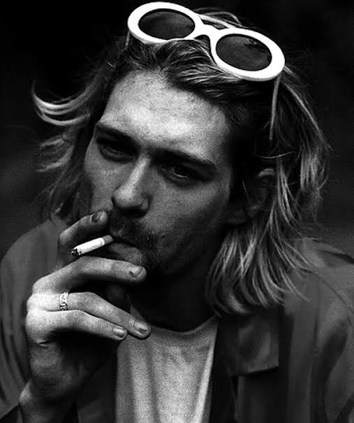
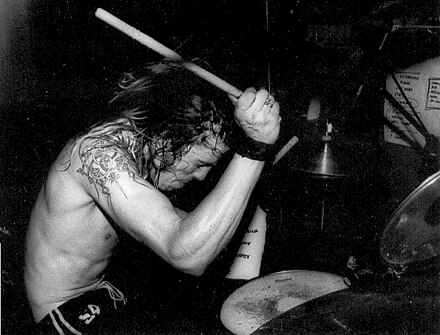

THE MAN WHO SOLD THE WORLD: COBAIN
Introduction:
Kurt Donald Cobain (February 20, 1967 – c. April 5, 1994) was an American musician. He was the lead vocalist, guitarist, primary songwriter, and a founding member of the grunge band Nirvana. Through his angsty songwriting and anti-establishment persona, his compositions widened the thematic conventions of mainstream rock music.

Nirvana:
In February 1993, Nirvana released "Puss" / "Oh, the Guilt", a split single with the Jesus Lizard, on the independent label Touch & Go.[63] For their third album, Nirvana chose producer Steve Albini, who had a reputation as principled and opinionated in the American indie music scene.
Conclusion:
Cobain's death drew international attention and became a topic of public fascination and debate.[83] Within hours, stocks ran low of Nirvana records in stores,[84] and Nirvana sales rose dramatically in the United Kingdom.[85] Unused tickets for Nirvana concerts sold for inflated prices on the used market.